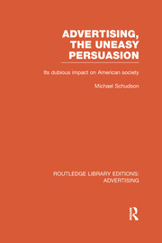

27:18 · 6 OPERE
Mark Fisher ed il realismo capitalista.
Il filo del discorso
La presentazione di Realismo capitalista di Mark Fisher interroga l’idea che il capitalismo costituisca l’unico orizzonte possibile della vita sociale. Dr Divago parte da alcuni passi del libro per discutere il rapporto fra democrazia formale, misure autoritarie e riduzione della cultura a patrimonio conservato o a merce. Il termine realismo capitalista viene ricondotto anche agli usi precedenti ricordati da Fisher, fra arte e sociologia della pubblicità, con il libro di Michael Schudson.
Leggi la sintesi completaRiduci la sintesi
Il contesto degli anni Ottanta e lo slogan sull’assenza di alternative introducono quindi una critica dell’economicismo: il relatore contesta la pretesa di organizzare sanità, istruzione e ogni relazione umana come un’impresa. Il confronto con Marcuse e con la scuola di Francoforte allarga il discorso alla società a una dimensione, alla reificazione e all’industria culturale. La parte centrale collega questi temi al disagio individuale, all’alienazione e alla pressione a conformarsi. Il personaggio kafkiano Odradek accompagna una rappresentazione dell’individuo trasformato in oggetto. Dr Divago propone poi un ragionamento sul rapporto fra progresso tecnico, tempo di lavoro e distribuzione dei benefici, usando cifre illustrative che non costituiscono una misurazione economica. Nella conclusione, la cultura è indicata come risorsa per mettere in discussione l’assenza di alternative e riconoscere la singolarità delle persone. Le affermazioni sul malessere e sulla morte di Fisher rimangono interpretazioni del relatore: non sono una spiegazione clinica né una prova che il suicidio derivi dalla profondità di un’analisi filosofica.
I libri nel discorso

Realismo capitalista
Note sul riferimento
Fotografia editoriale del volume NERO: NERO · Not, 2018 · traduzione Valerio Mattioli
Fotografia editoriale autentica del volume NERO: titolo, autore e marchio leggibili, copertina e dorso visibili. L’immagine raffigura la copertina del volume. L’edizione italiana è del 2018, non del 2009.
Titolo, autore e letture dell’opera sono espliciti; l’anno della traduzione italiana è corretto nelle note.

Advertising, the Uneasy Persuasion. Its Dubious Impact on American Society
Note sul riferimento
Copertina: Routledge · Library Editions: Advertising, brossura 25 novembre 2015 · copyright 2013
Immagine autentica dell’opera, controllata visivamente; l’edizione di riferimento non è attribuita al filmato.
Michael Schudson, titolo inglese e 1984 sono annunciati.

L’uomo a una dimensione
Note sul riferimento
Copertina: Einaudi, Piccola Biblioteca Einaudi, 1999
Copertina di un’edizione bibliografica dell’opera, con introduzione di Luciano Gallino. La citazione nel video resta probabile; questa edizione non vi è confermata.
Marcuse e L’uomo a una dimensione sono espliciti.

Dialettica dell’illuminismo
Note sul riferimento
Copertina: Einaudi, Piccola Biblioteca Einaudi, 2010
Edizione illustrativa dell'opera, con traduzione di Renato Solmi e introduzione di Carlo Galli; non identificata nel video.
Il titolo è annunciato nel confronto con la scuola di Francoforte.

Il disagio della civiltà
Note sul riferimento
Copertina: Einaudi, 2010
Freud e Il disagio della civiltà sono espliciti.

Il cruccio del padre di famiglia (Die Sorge des Hausvaters)
Identificazione probabile
Note sul riferimento
Copertina della raccolta Il messaggio dell’imperatore: Adelphi · Il messaggio dell’imperatore, Piccola Biblioteca 113-114, 1981 · traduzione Anita Rho
Copertina autentica della raccolta Adelphi che comprende Il cruccio del padre di famiglia, come conferma l’indice ufficiale. Il racconto e il personaggio Odradek non sono presentati come un libro autonomo; l’edizione di riferimento non è attribuita al filmato.
Kafka e Odradek sono nominati: il racconto è riconoscibile ma il titolo non viene pronunciato.